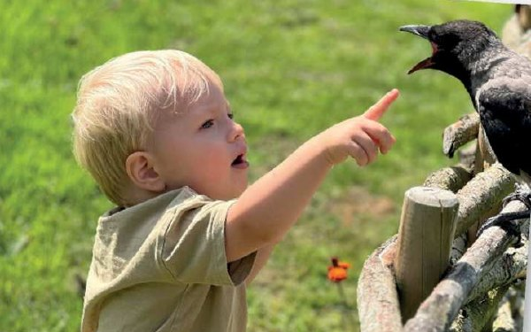
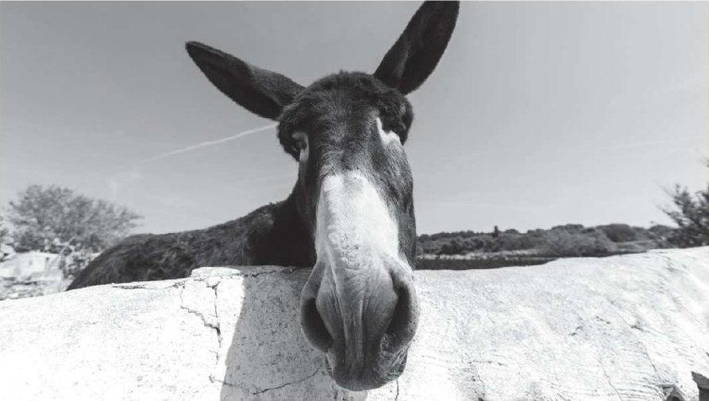
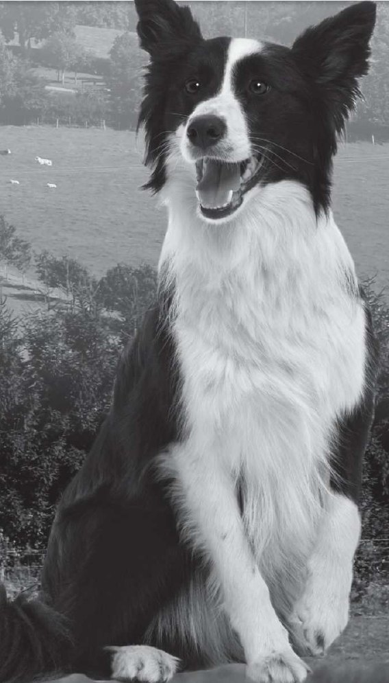

Language in action: watch a vlog about a trip to a wildlife centre and learn the past simple of regular (laughed, visited) and irregular verbs (took, saw, went). Learn to say -ed the right way, read the story of a boy and his crow, and talk about things that happened … ago.
1. Which animals ran away?
2. Who touched a snake?
3. What did the parrot say?
| Regular | Irregular | |
|---|---|---|
| + | Everyone laughed. | I took this picture before they ran away. |
| − | I didn't touch it. | We didn't see any elephants. |
| Past time expressions | Our class visited a wildlife centre last week. | They didn't go to the centre yesterday. |
1. Regular past simple forms end in .
2. Irregular verbs don't follow a pattern: take → , run → .
3. In negative sentences we use + the verb (touch, see, go) — for regular and irregular verbs.
| /t/ | /d/ | /ɪd/ |
|---|---|---|
| liked | played | wanted |
2. wanted
3. danced
4. needed
1. climb → climbed
2. hunt → hunted
3. start → started
4. want → wanted
5. watch → watched
Take turns: one person says a verb (call, climb, hunt, start, want, watch, visit, laugh, touch), the other says the past form. Is the pronunciation right?
| yesterday | last … | … ago |
|---|---|---|
| yesterday yesterday morning | last night last week / month / year | three days ago two weeks ago six months ago |
1. We visited the zoo Saturday.
2. I saw a fox two days .
3. My cat didn't eat .
4. They went to Africa .
5. I watched a film about sharks .
Not sure about an irregular verb? Look at the list on Student's Book p.134.

A few years ago, a Danish man found (find) a baby crow. It was very thin and hungry. There wasn't an animal specialist to help him so the man take the crow home. His family give the crow food and it become part of the family.
They call the crow Russell. Their son Otto love Russell. Russell not leave Otto and they spend a lot of time together.
After a few weeks, the family put the crow in their garden to fly home. Russell doesn't live with the family now but he visits them every day. Otto's mum share the story on social media. Russell and Otto are famous now!
1. The crow was big and strong when the man found it.
2. Russell lives with Otto's family now.
3. Russell visits the family every day.
2. I get up ago.
3. I start school ago.
4. I have lunch ago.
5. I meet my English teacher ago.
Say your sentences. Then listen to your teacher's sentences. Are any the same?
I went to Brazil on holiday last week.
NinaFalse! You were at school last week.

2. We lots of snakes at the wildlife park.
3. The horse to eat my apple. It wasn't hungry.
4. They for the cat in the garden but they him.
5. My dad a parrot as a pet when he was a child.
6. The cat out, she on my bed all day.
2. Crocodiles / killed / year / 1,000 / people / last
3. bears / days / in town / ago / Two / three / were / there
4. blue / last / saw / whales / summer / They
5. an / The / home / hour / cat / came / ago

Flo, a dog from Northern Ireland, suddenly disappeared one day. The Gallaghers, Flo's family, looked (look) for her but they not find her. They were very sad.
Three years later, a volunteer at the local animal hospital hear about a dog with no home. The dog sleep in an old building about ten miles from the Gallaghers' house. The volunteers at the hospital not want the dog to stay there. They go to find her.
Soon the dog have a new home at the animal hospital, and they share photos of her on social media. The Gallagher family see the photos and become very excited – it was Flo! The next day they take her home. They give her a big dinner.
2. She / get up / four hours
3. They / arrive in London / one week
4. We / have / lunch / an hour